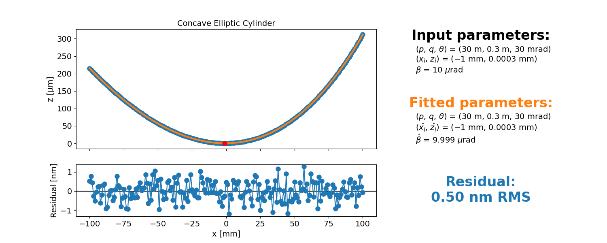
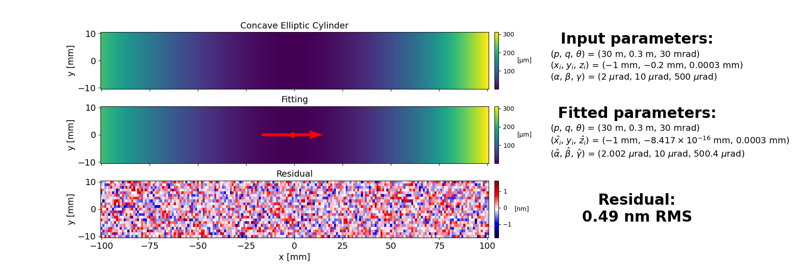

Note
Go to the end to download the full example code.
Example 04: Fit concave elliptic cylinder
This example shows how to fit a concave elliptic cylinder to simulated data using the XMF library.

- 
- 
import numpy as np
import xmf
# 1. Define lateral coordinates
x_range = 200e-3
y_range = 20e-3
x_num = 201
y_num = 21
x1d = np.linspace(-x_range/2, x_range/2, x_num)
y1d = np.linspace(-y_range/2, y_range/2, y_num)
x2d, y2d = np.meshgrid(x1d, y1d)
# 2. Set mirror parameters
# 2.1. Shape parameters
abs_p = 30
abs_q = 0.3
theta = 30e-3
# 2.2. Pose parameters
x_i = -1e-3
y_i = -2e-4
z_i = 3e-7
alpha = 2e-6
beta = 1e-5
gamma = 0.5e-3
# 2.3. True parameters as dictionary
true_params_dict = {
'p': abs_p,
'q': abs_q,
'theta': theta,
'x_i': x_i,
'y_i': y_i,
'z_i': z_i,
'alpha': alpha,
'beta': beta,
'gamma': gamma
}
# 3. Set measurement noise
height_measurement_noise_std = 0.5e-9
slope_measurement_noise_std = 100e-9
# 4. Demonstarte the fitting
# 4.1. Set input parameters as dictionary
input_params_dict = {
'p': abs_p,
'q': abs_q,
'theta': theta
}
# 4.2. Set the optimization flag dictionary
opt_dict = {
'p': False,
'q': False,
'theta': False
}
# Concave Elliptic Cylinder
# Slope profile
sx1d = xmf.generate_1d_slope(xmf.standard_concave_elliptic_cylinder_xslope, x1d, abs_p, abs_q, theta, x_i, beta)
sx1d_measured = sx1d + np.random.randn(sx1d.shape[0])*slope_measurement_noise_std
sx1d_res, sx1d_fit, opt_params_dict, opt_params_ci_dict, _ = xmf.fit_concave_ellipse_slope(x1d, sx1d_measured, input_params_dict, opt_dict)
xmf.fig_show_1d_fitting_slope(x1d, sx1d_measured, sx1d_fit, sx1d_res, true_params_dict, opt_params_dict, opt_params_ci_dict, 'Concave Elliptic Cylinder')
# Height profile
z1d = xmf.generate_1d_height(xmf.standard_concave_elliptic_cylinder_height, x1d, abs_p, abs_q, theta, x_i, z_i, beta)
z1d_measured = z1d + np.random.randn(z1d.shape[0])*height_measurement_noise_std
z1d_res, z1d_fit, opt_params_dict, opt_params_ci_dict, _ = xmf.fit_concave_ellipse_height(x1d, z1d_measured, input_params_dict, opt_dict)
xmf.fig_show_1d_fitting_height(x1d, z1d_measured, z1d_fit, z1d_res, true_params_dict, opt_params_dict, opt_params_ci_dict, 'Concave Elliptic Cylinder')
# Height map
z2d = xmf.generate_2d_cylinder_height(xmf.standard_concave_elliptic_cylinder_height, x2d, y2d, abs_p, abs_q, theta, x_i, z_i, alpha, beta, gamma)
z2d_measured = z2d + np.random.randn(z2d.shape[0], z2d.shape[1])*height_measurement_noise_std
z2d_res, z2d_fit, opt_params_dict, opt_params_ci_dict, _ = xmf.fit_concave_elliptic_cylinder_height(x2d, y2d, z2d_measured, input_params_dict, opt_dict)
xmf.fig_show_2d_fitting_map(x2d, y2d, z2d_measured, z2d_fit, z2d_res, true_params_dict, opt_params_dict, opt_params_ci_dict, 'Concave Elliptic Cylinder')
Total running time of the script: (0 minutes 0.830 seconds)